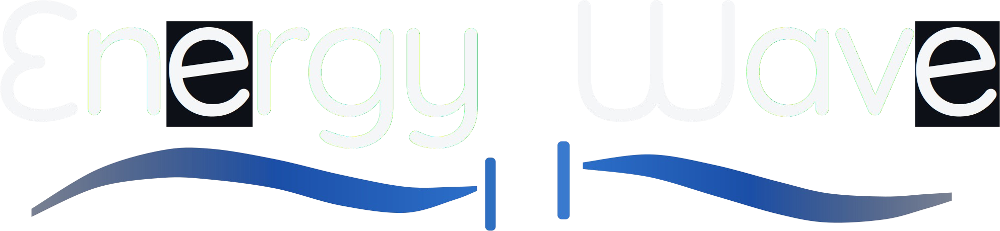

The power supply for humanoid robots.
Seed Round — Research Venture
energywave.ai
“What important truth do very few people agree with you on?”
Look around: the world software built is everywhere; the world it was supposed to power is not. EnergyWave exists to determine whether the next step in portable power is physically achievable — and to own the IP if it is.
Information technology rode decades of exponential gains. The power that drives the physical world — motors, robots, vehicles — did not. The gap between the two curves is the opportunity.
Lithium-ion sits at a practical 150–250 Wh/kg against a 400–500 Wh/kg theoretical range; industry planning assumes about 4 % a year, a doubling in roughly eighteen years. Platform makers are engineering around it — swappable packs, docks, inductive pads in the feet — not through it. Attributed published figures (DoW white paper v2.0, sources [5]–[7]); not company measurements.
Growth in compute per dollar since 1990
Improvement in portable energy density over the same period
Directional, not to scale — orders of magnitude illustrate the divergence.
To sense and move like a person, a humanoid must run human-grade systems at once — not a few proximity sensors and a battery clock.
Cameras and microphones.
Gas-sensor and electrochemical arrays — electronic nose and tongue.
Tactile arrays and electronic skin, at nerve-level granularity.
Dense actuators, at muscle-level granularity.
The capital-readiness bridge — a $60,000 SAFE on the Oct-13 materials; current amount and instrument [TBD]; no SAFE executed and no funding raised (founder, 15 Oct 2026) — is to buy three months and three objectives. Capital Readiness may be combined with this round (founder, 15 Oct); the combined structure is [TBD]. This deck is used only once the objectives are closed; today each is marked as it stands.
| # | Capital-readiness objective | Evidence that closes it | Today |
|---|---|---|---|
| 1 | Form both entities; IP strategy with K&L Gates; initial provisional protection | Delaware certificate and file number (K&L Gates is handling the entity work — founder, 15 Oct 2026); EIN; a coversheet provisional filed in the inventors’ names; 501(c)(3) formation documents | Open |
| 2 | Technical review of the first module; humanoid power-budget specification | A characterization plan with pre-registered pass / kill criteria; the power-budget specification — both drafted, inputs tagged | Drafted |
| 3 | Measurable go / no-go criteria; the next round prepared | Gate criteria published before any result; this round’s amount, milestones and use of funds built on a validated model | Drafted |
Do engineered structures — a conditioned solid-state magnetic core, a Casimir cavity, a metal–insulator–metal junction — produce any repeatable, artifact-free electrical output whose energy accounting cannot be closed by known sources? Expected answer on the mainstream prior: no. The company exists to obtain that answer to a standard that survives review, and to publish it either way.
Floyd Sweet’s vacuum triode amplifier — the named first module and, since 15 Oct 2026, the lead research path (founder’s decision, D2). No specimen selected, no hardware ordered, no measured result. Characterization plan drafted; specimen, magnetization, winding axis and conditioning are inventor-defined: [TBD] — thread A specimen and conditioning
Pre-registered replication of Moddel et al. 2021 — MIM diode under a Casimir cavity, cavity / no-cavity twins from one wafer, blinded. Published claim 1.4 pW, one lab, unreplicated; Maclay 2024 predicts the opposite sign. Claimed, not replicated.
Shielded isothermal enclosure, calorimetric accounting, lock-in measurement to the picowatt floor, blinded handling, open data. Published as a methods paper before any result. Residual value if every thread fails.
| Gate | Question | Pass | Kill |
|---|---|---|---|
| Gate 1 Characterize | Can the reported effects be reproduced, and are they artifacts? | Repeatable output above the fully characterized noise and artifact floor at ≥ 5σ in blinded runs, surviving every control. | Nothing above the floor, or output explained by a known source. Published with data. |
| Gate 2 Conservation test | If something is there, where does the energy come from? | Net output whose closed-system balance cannot be closed by known sources, replicated by a second laboratory contracted in advance. | The balance closes, or replication fails. Effect retired publicly. |
| Gate 3 Extract or retire | Can it be engineered? | Independently validated, repeatable performance under third-party observation — the first point at which EnergyWave would ever state a number. | Scaling, lifetime or stability fails. |
| Tranche | Funds | Released on | Sept model’s stored cumulative need (historical scenario) |
|---|---|---|---|
| A · at close | Gate 1 — commission the artifact-exclusion bench and publish its error budget (C); run the pre-registered replication (B); characterize the founder’s module under the same protocol (A); hire the principal investigator — a condition of Tranche A. | Close. [TBD] — Tranche A amount | $6,573,330 by month 9 |
| B · escrowed | Gate 2 — closed-system calorimetry; mechanism discrimination; independent replication at a second laboratory contracted before Gate 2 begins. | Written Gate-1 report, advisory-board certification, publication. [TBD] — Tranche B amount | $12,753,010 by month 21 (+ $6,179,680) |
| C · escrowed | Gate 3 — engineering characterization, lifetime and stability, third-party validation; the anti-tamper paperweight test. | Written Gate-2 report, certification, publication. [TBD] — Tranche C amount | $20,487,610 by month 36 (+ $7,734,600) |
| Category (Base scenario) | Year 1 | Years 2–3 | 36 months |
|---|---|---|---|
| Payroll — 18 roles, five applied physicists | 2,220,708 | 4,684,800 | 6,905,508 |
| Consulting — incl. two theoretical physicists at $500k/yr each | 1,126,667 | 2,420,000 | 3,546,667 |
| Equipment — instrumentation, additive manufacturing | 1,255,000 | 140,000 | 1,395,000 |
| Facilities — modelled as 6,000 sq ft near UC Irvine (model placeholder) | 636,500 | 636,000 | 1,272,500 |
| Research · Legal · G&A · Finance · Operations | 1,521,333 | 2,432,000 | 3,953,333 |
| Plan spend | 6,760,208 | 10,312,800 | 17,073,008 |
| 20 % reserve (on the whole plan) | 3,414,602 | ||
| Raise including reserve | 20,487,610 |
Model outputs on placeholder inputs — Raise Model v1.1-corrected (Sept 2026 inputs; saved Base scenario). Not validated, not a raise figure. One-time spend $2,145,000; recurring $14,928,008; monthly burn at the model’s snapshot months 6 / 12 / 24 / 36: $423,867 / $429,700 / $429,700 / $429,700 (UseOfFunds!C35:F35 — point-month outputs, not an average). v1.2 (16 Oct 2026): Chip Story’s row at $500,000 W-2 per the founder — plan $18,453,008, raise $22,143,610; payroll $8,735,508, consulting $3,096,667; burn $462,200 / $468,033 / $468,033 / $468,033.
Founder salary, engineer bases, rent, build-out, the instrumentation package, the additive-manufacturing system, insurance, recruiting, and the $500k-each question — validated by finance. [TBD] — validated inputs; budget owner Planned office: the UCI area near the National Fuel Cell Research Center — a founder plan (15 Oct 2026); no lease, facility access, partnership or institutional agreement is established in the reviewed evidence.
Gate months are the model’s placeholder inputs (Assumptions!B11–B13; plan start 1 Jan 2027). The August 2026 white paper phases them as 0–6, 6–18 and 18–36 months. Same three decisions.
Founded Statpedia; FDIC (2008 crisis); Wolfram Research; Avnet venture tech — early Anduril, Wrap (NASDAQ: WRAP). DoW white paper author; NDA consulting, U.S. intelligence org.
B.S. geological engineering (South Dakota School of Mines); M.S. geophysics (Colorado School of Mines); 50+ years in energy exploration — published researcher. Director, Zero Point Energy Project Group.
B.A. physics, Cornell — trained under Hans Bethe; Ph.D. physics, UC Riverside. Birkbeck College with David Bohm; ICTP Trieste with Abdus Salam. Fundamental Fysiks Group. Team member, not advisor — consented as such per the founder (15 Oct 2026); no further title or terms. A critic of the premise by the company’s account — attributed only with his permission.
MIT Ph.D. (mech. eng., 1987); co-inventor of the Boreas cycle; co-founder and president of Boreas, Inc.; R&D 100 award (1994). 35+ years, concept to commercialization.
The vacuum is the ground state; the Casimir force is conservative; steady work from one equilibrium reservoir is a perpetual-motion machine of the second kind. Even the best single-use Casimir stack holds ≈ 2 J/kg against ≈ 9×10⁵ J/kg in the lithium cell a humanoid already carries. Mitigation: Gate 1 finds this out for the price of Tranche A, and publishes it.
Probe deskew, thermal gradients, RF pickup, stored-energy depletion masquerading as generation — the history of the field. Mitigation: thread C exists to exclude them; error budget published; blinded runs; ≥ 5σ above a characterized floor.
One laboratory’s result is not a result. Mitigation: replication contracted before each gate; a second laboratory before Gate 2; kill criteria pre-registered.
Formation, the provisional’s successor, the ALG agreement and advisor consents are open on the release date. Mitigation: all are conditions of closing, not aspirations; nothing circulates until they close.
A founder-led research venture. Mitigation: the principal-investigator hire is a condition of Tranche A; the advisory board holds a veto over performance statements.
Every number in the model is a placeholder. Mitigation: tranches sized only after validation; escrow returns unspent capital on a kill; investors see the same reports the public does.
Pre-registration of every protocol, public and timestamped.
Null results published, with data, every time.
Replication budgeted and contracted before each gate, never assumed.
External scientific advisory board with veto over any performance statement — at least one declared critic.
No performance claim before Gate-3 third-party validation.
Capital released by gate — escrowed tranches.
Clean entity separation: EnergyWave, Inc. / McLean Companies LLC / GovThink.
Open methods: bench design and error-budget methodology published.
Would be the operating company — the power supply for humanoid robots, nothing else. Not formed as of 14 Oct 2026 (founder, S-38); K&L Gates is handling the entity work (founder, 15 Oct 2026) — a responsibility, not completed formation (D3). Intended to pursue strategic investment from In-Q-Tel — an intent, not a relationship.
Proposed to make the safety and competitiveness case to government and engage on technology-transfer policy. Not filed, and no formal tie to EnergyWave (founder’s statement, 14 Oct 2026).
| Term | Value |
|---|---|
| Instrument · pre-money | [TBD] — instrument and pre-money — no SAFE executed, no funding raised (founder, 15 Oct 2026) |
| Escrow for B and C | To be confirmed directly before close: agent, agreement and bank; release only on gate report, certification and publication; no fee to release — a proposed structure. [Pending: counsel — escrow structure] |
| Securities exemption | Rule 506(b) or 506(c) — governs whether this deck may reach anyone who has not heard from the company first. [Pending: counsel — 506(b) or 506(c)] |
An investor underwrites Tranche A and Gate 1. Tranches B and C sit in escrow from the close and are released only on a written gate report, advisory-board certification and publication. “Too early for us” — the objection the company has already heard from one fund — becomes a staged option.
The amount, the pre-money and the instrument are the founder’s decisions with counsel and are [TBD] (15 Oct 2026); none is stated in this draft. The September model’s stored cumulative need at each gate month is on slide 8, labelled as the historical scenario it is.
Seed · Tranche A at close · B and C escrowed
36-month plan to Gate 3 on the model’s clock
Ian McLean · EnergyWave, Inc.
ian@energywave.ai · 949-280-0936 · energywave.ai